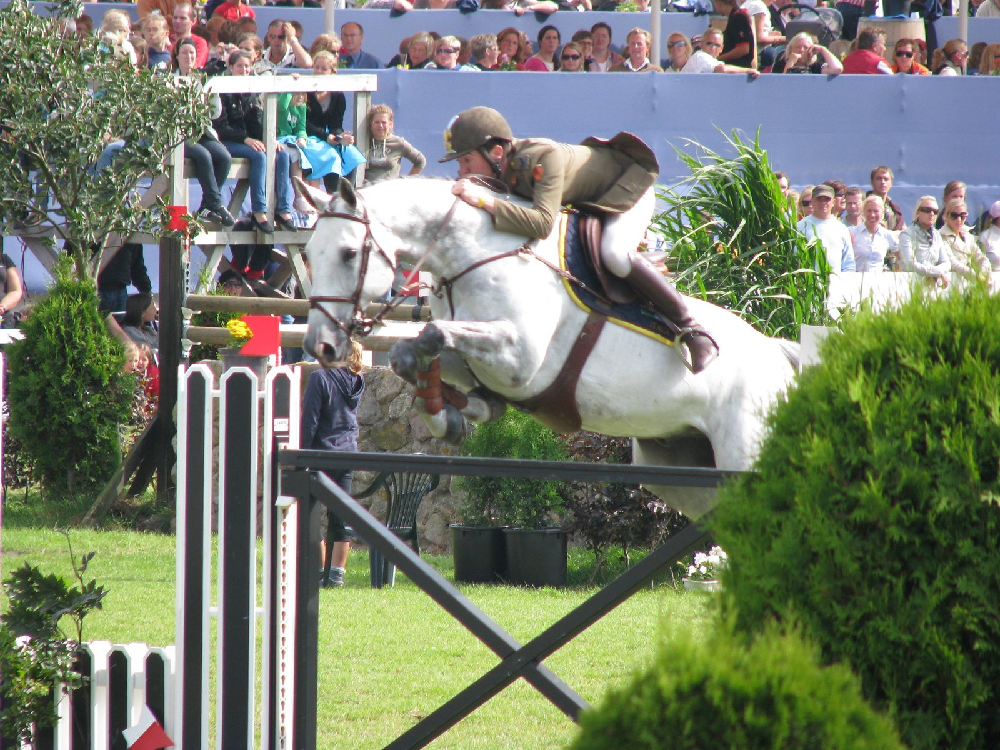

Cinco ceros y dos oros: Ramzy Al Duhami manda en el salto de los Juegos Asiáticos
Ramzy Al Duhami y Untouchable 32 ganaron el domingo la final individual del grupo B de salto en los Juegos Asiáticos de Aichi-Nagoya 2026, su segundo oro tras el de equipos. Faleh Alajami se llevó el grupo A.

Al Duhami salió el primero al desempate y marcó la referencia: cero faltas en 42,59 segundos con su yegua. Ningún rival la mejoró sin errores. Su compatriota Abdulrahman Alrajhi, con Lorenzo ES, fue el más rápido (39,73 s), pero derribó el primer elemento del doble y el último obstáculo. Con ocho puntos se quedó la plata, por delante del catarí Basem Mohammed y Chaccball, también con ocho, en 43,26 s.
Los recorridos del neerlandés Louis Konickx dejaron a tres jinetes sin penalizaciones tras las dos mangas en cada grupo, así que las medallas estaban adjudicadas antes del desempate. Solo faltaba ordenarlas. El japonés Eiken Sato lo pagó con Chadellano: hizo cero el domingo, pero el punto por tiempo que arrastraba del sábado lo dejó cuarto.
El oro es el sexto de Al Duhami en unos Juegos Asiáticos y su segundo individual, dieciséis años después de Guangzhou 2010. A sus 54 años, fue el único que completó junto a Untouchable 32 todos los recorridos de equipos e individual sin una sola penalización. El saudí explicó que el oro por equipos, logrado tres días antes, tuvo un peso especial por la responsabilidad de salir en último lugar.
En el grupo A, los tres aspirantes derribaron en el desempate. Faleh Alajami y Qapella pararon el crono en 40,88 s con cuatro puntos. La plata fue para Emiratos Árabes Unidos con Almeheiri y Hudson de Vains, con la misma penalización y 41,93 s. El bronce, para el saudí Almobty y Diana du Pleyau Z, que tiraron el último obstáculo y terminaron en 45,35 s.
Saad Alajmi y Davenport, segundos tras el sábado, se retiraron en la segunda manga después de un rehúse en el penúltimo obstáculo.
Para Alajami es la primera medalla individual en unos Juegos Asiáticos, veinte años después de debutar en Doha 2006 en raid. En Hangzhou había sido noveno individual y plata por equipos con Catar. A Qapella empezó a montarla esta temporada.
Arabia Saudí, Catar y Emiratos Árabes Unidos se repartieron las seis medallas individuales del salto.
— Redacción de Hípica al Día